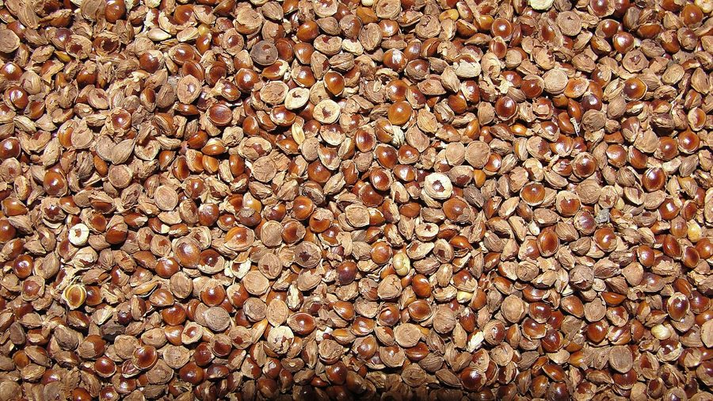

कुटकीLittle Millet
Panicum sumatrense · Poaceae · FLR-0286

- Scientific name वैज्ञानिक नाम
- Panicum sumatrense Roth ex Roem. & Schult.
- Family कुल
- Poaceae
- Hindi हिंदी
- कुटकी
- Local names स्थानीय नाम
- kutki, kutaki, little millet
- Status here यहाँ की स्थिति
- cultivated
- Movement आवागमन
- Resident, here all year
- Known from कहाँ दर्ज
- Others have published records from the wider Awadh–Purvanchal plain, none yet from Basti–Ayodhya अवध–पूर्वांचल से दूसरों के प्रकाशित अभिलेख, बस्ती–अयोध्या से अभी नहीं
- IUCN IUCN
- not evaluated
- Review समीक्षा
- audited and independently read
When to look कब देखें
Expected mainly in June, July, August, September, October. मुख्यतः जून, जुलाई, अगस्त, सितंबर, अक्टूबर में अपेक्षित।
Tell it apart from इनसे अलग पहचानें
कुटकी / Little Millet
Panicum sumatrense Roth ex Roem. & Schult. — Poaceae
कुटकी — एक छोटी मिलेट फसल जो सूखी ज़मीन पर भी उगती है। इसके दाने बहुत छोटे होते हैं पर पौष्टिक होते हैं। यह गर्मी और सूखे को सहन करता है। इसकी बाली हल्की, सुनहरी होती है। दाना पोरिज, दलिया या खीर बनाने में आता है। यह फसल अगस्त से सितंबर तक तैयार हो जाती है।
Quick Identification त्वरित पहचान
| Feature | Description |
|---|---|
| Form | Annual grass, 40–60 cm tall, fine-stemmed, slender, erect |
| Leaves | Linear, fine, 10–20 cm, narrow, 3–5 mm wide, blue-green |
| Inflorescence | Open panicle, 10–15 cm, drooping slightly, with fine branches |
| Spikelets | Small, arranged on delicate branches, opening successively |
| Grain | Very small, globose, 1.5–2 mm diameter, pale cream to golden-yellow |
| Roots | Fibrous, shallow, widely spreading |
Field tip: A fine, delicate grass with narrow leaves and a light, drooping panicle of tiny grains. Much smaller and finer than barnyard millet or finger millet. Matures in 70–80 days. Grows June to September.
हिंदी — कैसे पहचानें: महीन, पतली पत्तियाँ; बाली हल्की, झूलती हुई। दाना बहुत छोटा, सुनहरा। ज़मीन सूखी हो तो भी उगता है।
Morphology आकारिकी
Biometrics (typical measurements for little millet in eastern India):
| Measurement | Range |
|---|---|
| Plant height | 40–60 cm |
| Leaf length | 10–20 cm |
| Leaf width | 3–5 mm |
| Panicle length | 10–15 cm |
| Grain diameter | 1.5–2 mm |
Stems: Slender, fine, erect, jointed, hollow, without prominent tillering.
Leaves: Linear, narrow, fine-pointed, parallel-veined, with a prominent midrib. Color is light green to blue-green. Margins are entire.
Inflorescence: An open panicle with delicate, spreading branches. Spikelets are borne singly or in small groups and open slowly during the flowering period.
Grain: Very small caryopsis, globose or slightly oval, 1.5–2 mm diameter, cream-yellow or golden, smooth.
हिंदी: महीन तना, पतली पत्ती। बाली खुली, हल्की। दाना बहुत छोटा, गोल।
Behaviour & Ecology व्यवहार और पारिस्थितिकी
A warm-season millet of South Asian origin, highly valued for its drought tolerance and ability to produce on marginal lands. Panicum sumatrense is one of the most heat-tolerant cereal crops and thrives in upland, well-drained soils with limited moisture. It germinates in June with the monsoon and completes its life cycle in 70–80 days, making it suitable for short-season cultivation. The plant is self-fertile and requires minimal external inputs. Its small stature and fine leaves mean it produces little straw but offers excellent grain in proportion to land and water used. The grain is relished by birds and small mammals.
हिंदी: गर्मी और सूखे को सहन करता है। ऊँची ज़मीन पर उगता है। 70-80 दिनों में तैयार हो जाता है। कम पानी में भी अच्छी फसल देता है।
Life Cycle / Phenology जीवन चक्र
| Month / Season | Event |
|---|---|
| May | Field preparation; dry seeding possible |
| June–July | Sowing of grains; rapid germination and seedling emergence |
| July–August | Vegetative growth and leaf expansion; minimal tillering |
| August–September | Flowering and grain development |
| September–October | Grain maturation and ripeness; drying of panicles |
Total duration: 70–80 days from sowing to physiological maturity.
हिंदी: जून-जुलाई में बीज, अगस्त-सितंबर में फूल और दाना, सितंबर-अक्टूबर में कटाई।
Cultivation Calendar कृषि कैलेंडर
| Stage | Month(s) |
|---|---|
| Field preparation, light ploughing | May–June |
| Sowing | June–July (8–12 kg/hectare) |
| Vegetative growth | July–August |
| Flowering and grain set | August–September |
| Grain filling and maturation | September–October |
| Harvesting | September–October (when panicles turn golden) |
Little millet is primarily a Kharif crop, occasionally grown as an early summer crop in warmer regions if sown earlier (May–June) with sufficient soil moisture.
Associated Species / Interactions संबंधित प्रजातियाँ
- Upland crop neighbors: Often grown in marginal areas alongside Sorghum, Sesame, and Groundnut.
- Seed dispersal: Grain readily taken by birds and small rodents; spillage creates volunteer plants.
- Fodder: Straw, though minimal, is dried and stored for dry-season cattle feed.
- Intercrop potential: Sometimes intercropped with legumes in marginal upland areas.
Pests and Diseases कीट और रोग
- Grain feeding insects: Sitophilus and Tribolium infest stored grain; traditional drying on raised platforms and storage in sealed containers provides protection.
- Leaf spots: Fungal spots on leaves are occasional in humid conditions; rarely cause yield loss.
- Powdery mildew: Rare on little millet; more common on other millets.
- Bird predation: Young seedlings and ripening panicles are eaten by birds and munias; minimal loss on mature plants.
Agricultural / Human Relevance कृषि प्रासंगिकता
Grain uses: The small grain is ground into flour for porridge and upma. Whole grains are boiled as khichdi with legumes, made into popped snacks (murmura), or ground into a nutritious flour for infant food. The grain is easily digestible.
Nutritional value: Little millet is rich in dietary fiber, B vitamins, and minerals (phosphorus, magnesium, iron). It has a lower glycemic index than many cereals and is recommended for people with diabetes.
Cultivation advantages: Requires very little water and fertilizer. Grows on the poorest soils. Produces grain in less than three months, allowing two crops in some years. Seeds are inexpensive and widely available in eastern UP villages. It is a traditional security crop for rainfed farmers.
Milling: The grain is harder than larger millets and requires vigorous pounding to remove the husk; mechanical mills are now used.
हिंदी: दलिया और खीर बनाते हैं। बहुत पौष्टिक, पचने में आसान। सूखी ज़मीन पर 70 दिनों में तैयार हो जाता है। भूमिहीनों और गरीब किसानों की फसल।
Expected Locally स्थानीय रूप से अपेक्षित
Not a field record. Written from published accounts for eastern Uttar Pradesh. No confirmed local sighting yet — if you have seen it, that is what the atlas needs.
अभी तक स्थानीय पुष्टि नहीं। यह विवरण प्रकाशित स्रोतों से है, किसी अवलोकन से नहीं।
Little millet is to be expected in cultivated upland fields throughout Basti district, particularly in rainfed areas and marginal lands. GBIF holds published records from the wider Awadh–Purvanchal plain. The crop is grown as a traditional minor cereal in villages with well-drained soils.
Distribution वितरण
Global range: Believed native to South Asia; cultivated across tropical and subtropical Asia, particularly India.
In India: Widely cultivated in dry regions of Rajasthan, Karnataka, Maharashtra, and eastern states.
In Uttar Pradesh: Grown in upland rainfed areas across the state.
In Basti district / eastern UP: A minor traditional millet in villages with light, well-drained upland soils.
Research Questions शोध प्रश्न
Anyone can investigate these | कोई भी इन प्रश्नों की जाँच कर सकता है
- What is the minimum water requirement for little millet to produce grain in an upland field, compared to monsoon rainfall? — Measure soil moisture in producing vs. failed fields.
- How long can little millet grain be stored in traditional methods (cloth bag in a cool place) before insect damage becomes serious? / कुटकी को कपड़े की बोरी में कितने दिन रख सकते हैं? — Store grain and periodically check for insects.
- Which birds eat the ripening panicles, and at what stage is damage most severe — at flowering or at grain ripeness? — Observe fields; note bird visits and damage.
- Can little millet flour be used as an infant food, and how much water is needed to make a digestible porridge? — Test preparation methods; assess digestibility.
- Is the yield of little millet affected by soil pH, and does it do better on acidic or alkaline soils? — Compare yields across soils with different pH values.
Similar Species मिलती-जुलती प्रजातियाँ
| Species | How to tell apart | हिंदी | |
|---|---|---|---|
| [[finger_millet\ | Finger Millet]] (Eleusine coracana) | Taller (60–90 cm); seed head has 5–8 distinct finger-like spikes; grain reddish | रागी — लंबा, उँगली जैसी बालियाँ; दाना लाल |
| Sorghum (Sorghum bicolor) | Much taller (1–2 m); broader leaves; larger, more compact panicle; grain much larger | ज्वार — बहुत लंबा, मोटी पत्ती; बड़ा दाना | |
| Proso millet (Panicum miliaceum) | Similar but slightly larger grain (2.5–3 mm); panicle more compact | प्रोसो बाजरा — दाना थोड़ा बड़ा |
Field rule: A fine, slender grass with narrow leaves, a light drooping panicle, and tiny golden grains; matures in 70–80 days in upland fields with minimal water.
Taxonomy & Classification वर्गीकरण
Original description. Originally described by Roth in 1821. Later validated by Roemer and Schultes. The genus name Panicum is from the Latin panis (bread), referring to the grain. The specific epithet sumatrense refers to Sumatra, where the species is found.
Subspecies. Monotypic — no subspecies are currently recognised.
Family and order placement. Poaceae, order Poales. Related to proso millet (P. miliaceum) and barnyard millet (Echinochloa frumentacea).
Phylogenetic notes. Panicum sumatrense is thought to be a cultivated derivative of wild Panicum species. Molecular evidence places it among the drought-tolerant Panicum species.
IUCN status rationale. Not evaluated. Widely cultivated; no conservation concern.
Photo Gallery फोटो गैलरी
Photos needed आवश्यक फोटो
- [ ] Whole plant showing fine stems and leaves (पूरा पौधा)
- [ ] Drooping panicle at maturity (बाली)
- [ ] Seeds in hand showing tiny size (दाना)
No photos yet — add field photos to media/species/little_millet/ and run node scripts/sync_photos.js.
References संदर्भ
- Roth, A.W. (1821). Botanische Abhandlungen und Beobachtungen. Nürnberg.
- Roemer, M.J. & Schultes, J.A. (1817). Systema Vegetabilium. Stuttgartiae.
- Hooker, J.D. (1889). Flora of British India, Vol. 7. L. Reeve & Co., London.
- Duthie, J.F. (1903). Flora of the Upper Gangetic Plain and of the Adjacent Siwalik and Sub-Himalayan Tracts, Vol. 2. Government Printing, Calcutta.
- Indian Council of Agricultural Research (2021). Handbook of Agriculture. ICAR, New Delhi.
- GBIF Occurrence Data — Panicum sumatrense, India (2020–2026).
Source file: species/flora/crops/little_millet.md